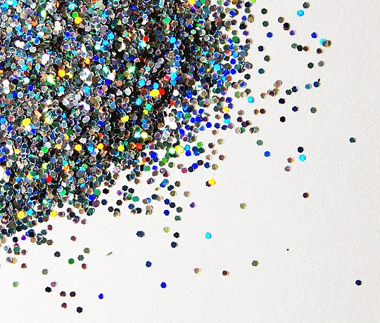

Glitter is an assortment of flat, small, reflective particles that are precision cut and come in a variety of shapes, sizes, and colors. Some types of glitter are banned since October 17, 2023, in the European Union as part of a ban on microplastics intentionally added to products. Glitter particles reflect light at different angles, causing the surface to sparkle or shimmer. Glitter is similar to confetti, sparkles and sequins, but somewhat smaller. Since prehistoric times, glitter has been made from many different materials including stones such as malachite, and mica, as well as insects and glass. Uses for glitter include clothing, arts, crafts, cosmetics and body paint. Modern glitter is usually manufactured from the combination of aluminum and plastic, which is rarely recycled and finds its way into the aquatic habitats, eventually becoming ingested by animals, leading some scientists to call for bans on plastic glitter.
Glittering surfaces have been found to be used since prehistoric times in the arts and in cosmetics. The modern English word "glitter" comes from the Middle English word gliteren, possibly by way of the Old Norse word glitra. However, as early as 30,000 years ago, mica flakes were used to give cave paintings a glittering appearance. Prehistoric humans are believed to have used cosmetics, made of powdered Hermatite, a sparkling mineral.
The first production of modern plastic glitter is credited to the American machinist Henry F. Ruschmann who invented a machine to cut photo films and paper in the 1930s. Sometimes, the machine "stuttered," generating small pieces of glossy cellulose that employees picked up and used as "snow" to decorate their Christmas trees, and modern glitter was born.[20][5] With his partner, Harry Goetz, Ruschmann cut mica into washers and glitter from metallized cellulose acetate film. During World War II, glass glitter became unavailable so Ruschmann found a market for scrap plastics, which were ground into glitter. In 1943, he purchased Meadowbrook Farm in Bernardsville, New Jersey where he founded Meadowbrook Farm Inventions (MFI) in 1948 to produce industrial glitter. MFI became Meadowbrook Inventions, Inc. in 1953.[20] Ruschmann filed a patent for a mechanism for cross-cutting films as well as other glitter-related inventions. Substrates for cutting glitter expanded from metalized cellulose and aluminum foil to metalized and iridescent film, polyester, PVC, and laminations cut into various shapes.
Glitter can be seen as a tool of fashion used by various subcultures, as it allows for a visible statement to be worn and seen on the body. This is because it has been theorized to be a "flickering signifier", or something that destabilizes known notions of popular culture, identity, and society. Glitter is associated with "fringe cultures", which often use excessive glitz and glamor (such as glitter) to evoke a deeper understanding between the relationships of commercialized popular culture and "high" culture, or "high-brow" art.
Trisia Farrelly, an environmental anthropologist at Massey University, has called for a ban on glitter made of Poyethlyene Terephthalate (PETE) and aluminium, as it is a microplastic that can leach hormonal disruptors into the environment.Furthermore, plastic glitter takes about one thousand years to biodegrade, according to Victoria Miller, a materials and engineering scientist at North Carolina State University. When dozens of British music festivals pledged to ban single-use plastics by 2021, the proposed ban included plastic glitter.